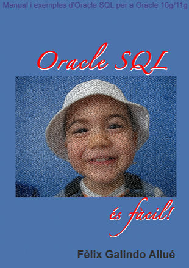

Oracle SQL és fàcil!
Manual i exemples d’Oracle SQL per a Oracle 10g/11g
ISBN: 978-84-615-9841-0
Publicat: Juliol del 2012
Resum
Aquest llibre permet al lector iniciar-se en l’ús de les bases de dades Oracle mitjançant el llenguatge SQL. No s’assumeix cap coneixement previ, tret de nocions generals bàsiques sobre els sistemes operatius.
El llibre cobreix des de les consultes més senzilles fins a objectes complexos com vistes i índexs, passant per subconsultes, unions entre taules, funcions d’agrupació, manipulació de les dades, definició de taules i restriccions, entre d’altres.
# Índex
| Part | Títol | Pàgina |
|---|---|---|
| Índex | Pàg. i | |
| Prefaci | Pàg. xii | |
| 1 | SQL i l’accés a la informació | Pàg. 1 |
| 2 | Filtrat i ordenació de les dades | Pàg. 37 |
| 3 | Funcions d’una sola fila | Pàg. 57 |
| 4 | Consultes amb més d’una taula | Pàg. 115 |
| 5 | Agrupació, funcions de grup i estadístiques | Pàg. 161 |
| 6 | Subconsultes | Pàg. 189 |
| 7 | Personalització de l’entorn SQL*Plus | Pàg. 211 |
| 8 | Manipulació de les dades | Pàg. 267 |
| 9 | Definició i gestió de taules | Pàg. 299 |
| 10 | Restriccions | Pàg. 339 |
| 11 | Vistes | Pàg. 377 |
| 12 | Altres objectes de base de dades | Pàg. 399 |
| Apèndixs | Pàg. 423 | |
| A | Bases de dades utilitzades | Pàg. 423 |
| B | Resum de funcions SQL | Pàg. 431 |
| C | Solucions als exercicis d’autoavaluació | Pàg. 441 |
| Bibliografia | Pàg. 477 |
Arxius associats al llibre
Pot descarregar els arxius de base de dades associats al llibre amb l’arxiu ZIP següent: Arxiu ZIP de contingut
Errades i comentaris
Encara no s’ha detectat cap errada important…